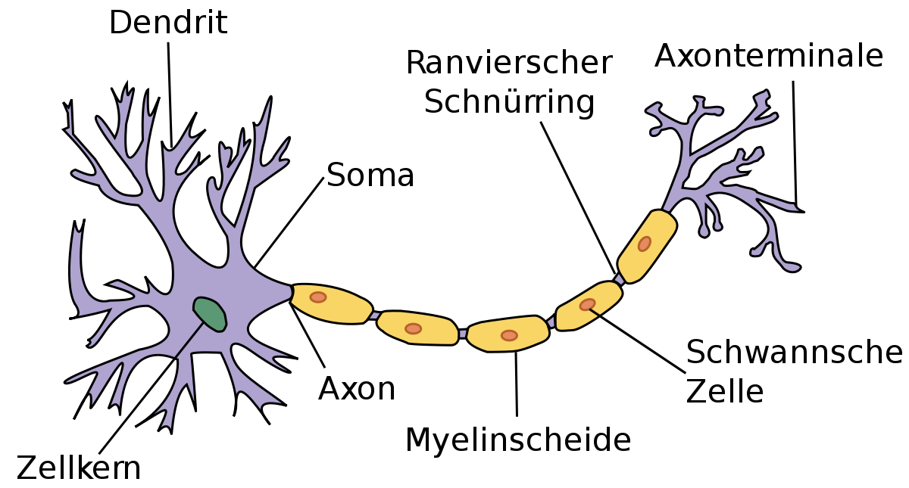
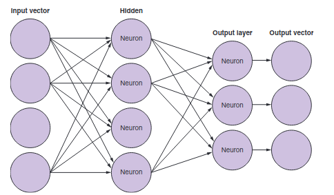
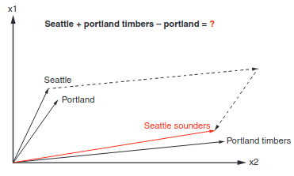
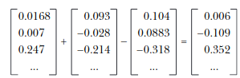
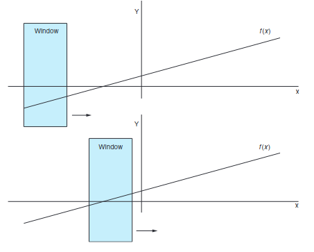
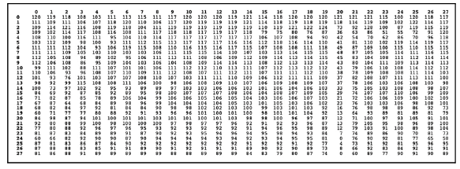
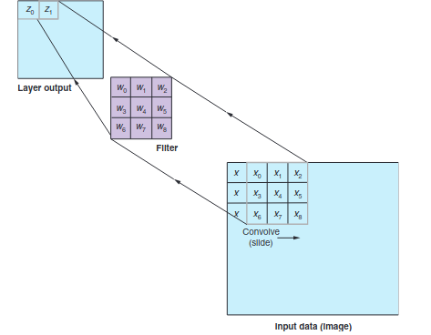
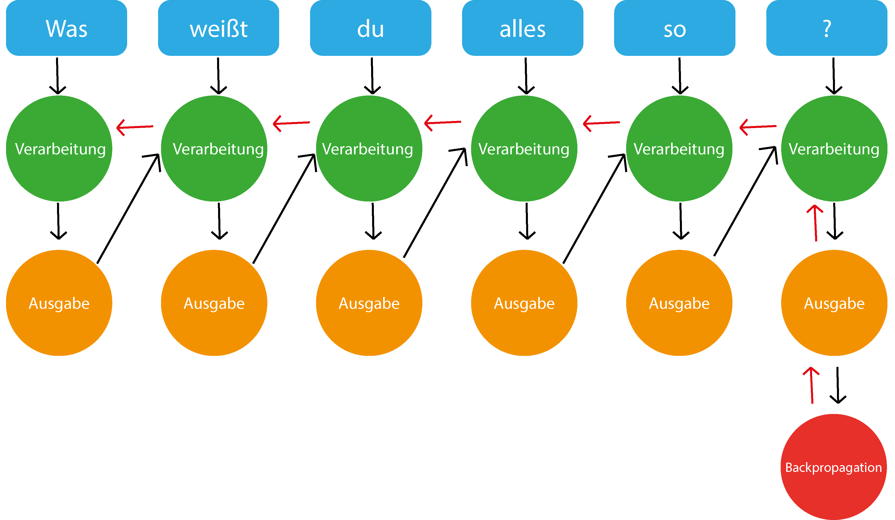

1. Allgemeines
In dem Skript Text Analysis ging es bereits über Natural Language Processing und die Konzepte von Machine Learning, indem man unter anderem Vektoren verwendet. Diese benötigt man, um die Verbindungen zwischen Wörtern zu verstehen und Statistiken anfertigen zu können.
Nun geht es um Deep Learning und wie man dieses für seine Anwendung nutzen kann. Für den Begriff Deep Learning gibt es verschiedene Definitionen aber meist versteht man darunter, wenn man mehrschichtige neuronale Netzwerke für Machine Learning verwendet.
Den Namen bekommen neuronale Netzwerke von Neuronen, welche man eher unter dem Begriff Nervenzellen kennt. Stark vereinfacht gesagt funktionieren diese, indem ein Signal durch die sogenannte Dendrite in den Nucleus oder Zellkern fließt und sich eine elektrische Ladung beginnt aufzubauen. Sobald die Ladung groß genug ist wird ein elektrisches Signal durch das Axon gefeuert. Dendriten sind allerdings nicht alle gleich beschaffen und so werden manche Signale stärker angenommen als andere und somit wiegen Nervenzellen die Signale ab und entscheiden dann, wann ein elektrisches Signal gefeuert werden soll oder nicht. Bei neuronalen Netzwerken ist dies auf eine andere Weise auch der Fall.

1.1. Perzeptron
Das Perzeptron ist ein vereinfachtes künstliches neuronales Netz, welches zuerst von Frank Rosenblatt im Jahre 1958 vorgestellt wurde. Das besondere hierbei ist, dass es nur einem einzigen künstlichen Neuron besteht.
Rosenblatt wollte Maschinen beibringen, dass diese Bilder erkennen können und so wollte er einzelnen Bildern eine Gewichtung verleihen, was in dem Zusammenhang mit Neuronen, wie bereits besprochen, gleichzustellen mit der Wichtigkeit ist. Dabei sollte jeder Rezeptor einen kleinen Teil des Bildes sehen und die Helligkeit, die ein einzelner Rezeptor sieht, sollte dann die Stärke des Signals bestimmen.
Wenn nun also genug Signale kamen wurde das Axon gefeuert, welches zeigte, dass ein Bild erkannt wurde. In diesem Fall gibt es nur zwei Zustände. Entweder das Bild wird erkannt oder es wird nicht erkannt.
1.2. Numerisches Perzeptron
Der Sinn hinter den Erklärungen für Perzeptronen ist, dass man auch beim Machine Learning gerne ein Dataset hätte, von dem man ein Beispiel entnimmt, dieses durch einen Algorithmus gehen lässt, welcher dann anschließend "ja" oder "nein" sagt.
Bei Rosenblatt’s Experiment brauchte man also noch die Gewichtung (weight), das jedem einzelnen Bild zugewiesen werden musste. Anschließend wurde nur noch geschaut in welchem Fall das Neuron feuern soll.
1.3. Backpropagation
Backpropagation oder auch Backpropagation of Error oder Fehlerrückführung genannt, ist ein Verfahren für das Einlernen von künstlichen neuronalen Netzen.
Geoffrey E. Hinton und sein Team zeigten, dass es einen Weg gibt, wie man mehrere Perzeptronen zur selben Zeit mit einem Ziel verwenden kann, was viele Probleme lösen würde. Dies ist auch die Grundlage von Deep Learning. Die ungeklärten Fragen waren aber, wie man die Gewichtung dieser Perzeptronen ändern kann, weil wenn aus einem Output eines Perzeptrons wieder der Input für dieses folgt, bringt dies nichts und man erreicht nichts. Backpropagation hilft genau hier aus.
Mit Backpropagation kann man also den Betrag um eine Gewichtung zu ändern erfahren, indem man den Input, den Output und den erwarteten Wert gegeben hat.
Ein neuronales Netzwerk ist im Endeffekt eine Sammlung von Neuronen, die miteinander verbunden sind. Wenn man eine Architektur hat, bei der der Output zu einem weiteren Input wird, spricht man auch von sogenannten hidden neurons. Ein solches Netz wird dann als fully connected network bezeichnet.

2. Word Vectors
Zurzeit haben wir den Kontext von Wörtern in einem Satz neben dem zu analysierenden Wort ignoriert. Tatsächlich ändern die Wortnachbarn aber sehr viel und tragen viel zur Bedeutung eines Wortes bei.
Mit Word Vectors kann man Beispielsweise Synonyme (Wörter mit gleicher Bedeutung), Antonyme (Wörter mit gegenseitiger Bedeutung) oder auch Wörter, die zu derselben Kategorie zählen erkennen.
Durch die großen Bag of Words bei der Latent Semantic Analysis gehen oft die zusätzlichen Bedeutungen eines Wortes verloren, deshalb werden hierbei viel kleiner Bag of Words erstellt.
Word Vectors im Allgemeinen sind numerische Repräsentationen von Wortmerkmalen oder der Bedeutung von Wörtern.
2.1. Wofür benötigt man Word Vectors
Word Vectors sind hilfreich um Wörter zu finden, welche sich aus der Bedeutung verschiedener Wörter zusammensetzen. Damit ist zum Beispiel folgendes gemeint.
Eine Frau, die in Europa im frühen 20. Jahrhundert im Bereich der Physik etwas erfunden hat.Wenn man nach einer solchen Frage suchen würde, würde man vermutlich nur eine Liste von berühmten Physikerinnen und Physikern bekommen, bis man dann anschließend realisiert, dass man auf den Begriff Marie Curie kommen wollte. Sobald man allerdings die korrekte Antwort definiert hat, kann es sein, dass beim nächsten Mal, wenn man dies nachschlägt bereits die richtige Antwort bekommt.
Ähnlich ist es, wenn man Word Vectors verwendet. Mit diesen könnte man hier nach einem Wort suchen, dass die Bedeutung von Physik, weiblich, Europa, 20. Jahrhundert vereint.
Außerdem kann man mit Word Vectors analoge Fragen beantworten. Ein Beispiel hierfür wäre:
Wer ist die Marie Curie der Musik?Dies kann man nicht für Personen, sondern auch für andere Begriffe, wie beispielsweise Teams oder Städte nutzen.
Welches Team ist für Graz, was Red Bull Salzburg für Salzburg ist?2.2. Word2Vec
Word2Vec ist das berühmteste Model für Word Embedding.
Unter Word Embedding wird verstanden, dass Texte in denen Wörter dieselbe Bedeutung haben zusammen repräsentiert werden. Es werden also sozusagen alle Wörter in einem Koordinatensystem dargestellt, wobei Wörter, die zusammen gehören, nah beieinander sind.
2012 erfand Thomas Mikolov, als er bei Microsoft arbeitete, einen Weg um die Bedeutung von Wörtern in einem Vektor darstellen kann. 2013 veröffentlichten er und seine Mitarbeiter dann die Software, die dies kann mit dem Namen Word2Vec, als sie bei Google arbeiteten. Bei Word2Vec muss man nicht beispielsweise angeben, dass Marie Curie eine Wissenschaftlerin ist und, dass Salzburg und Graz Städte sind, sondern man muss lediglich einen Textcorpus haben, der groß genug ist und diese Wörter besitzt.
Diese Art, die Word2Vec verwendet um zu lernen, nennt man unsupervised learning.
2.2.1. Unsupervised Learning
Beim unsupervised learning müssen die Trainingsdaten nicht gelabeled werden. Das Model findet hierbei selbst Muster und Beziehungen zwischen den Daten. Ein solches Model wird dann schlauer, indem man ihm immer mehr Daten gibt, aus dem es lernen kann.
2.2.2. Supervised Learning
Beim supervised learning müssen die gesamten Trainingsdaten in irgendeiner Weise gelabeled werden. Es muss also beispielsweise eine Mail mit Spam getagged werden oder eine Nachricht mit Likes versehen werden. Ein Model, welches supervised learning verwendet, wird nur besser, indem man die Unterschiede zwischen erwartetem Output und den Predictions messen kann.
Tatsächlich war das Word2Vec Model als es 2013 vorgestellt wurde viel genauer mit 45 % richtigen Antworten zu Fragen, die den obigen ähneln, als ein normales Latent Semantic Analysis Model mit nur 11 %.
Hier ist ein Beispiel aus dem Buch "Natural Language Processing in Action: Understanding, analyzing, and generating text with Python" bei dem gezeigt wird, wie ein Team gefunden wird (Seattle sounders) indem man die Portland timbers aus Portland mit einem Team aus Seattle vergleichen will.

Man kann also erkennen, dass der Abstand zwischen Seattle und Portland ähnlich zu dem von Seattle sounders und Portland timbers ist. Wenn man also Seattle + Portland timbers - portland rechnet ergibt sich Folgendes:

Außerdem wurden noch andere Beziehungen zwischen Wörtern durch Word2Vec dargestellt, und so kam man beispielsweise darauf, dass der Unterschied zwischen zwei Singular und Plural Formen verschiedener Wörter ungefähr derselbe ist.
2.3. FastText
Entwickler von Facebook haben die Ideen des Word2Vec sogar noch weiter ausgebaut und diesen neuen Algorithmus dann fastText genannt. Bei fastText werden nicht nur die Nachbarwörter vorhergesagt, sondern sogenannte n-character grams, also eine Anzahl von n Zeichen innerhalb eines Wortes. Zum Beispiel für das Wort whisper würden sich folgende 2- und 3-character grams ergeben:
whisper
wh, whi, hi, his, is, isp, sp, spe, pe, per, erFastText brachte Modele für ganze 294 Sprachen heraus, wo auch selten gesprochene Dialekte für Sprachen dabei sind. Den Korpus davon nahmen sie von Wikipedia und diese wurden dann eingelernt.
2.4. Convolutional Neural Networks (CNNs)
In den letzten Jahren gab es viele neue Erkenntnisse rund um das Thema neuronale Netzwerke. Durch die vielen Open-Source-Tools entstanden viele neue Tools, um Muster in Datensätzen zu erkennen. Aus der Idee des Perzeptrons beziehungsweise des multilayer Perzeptrons entstanden dann neue Varianten, wie das Convolutional Neural Network und das Recurrent Neural Network.
Die Bedeutung von Sätzen entsteht meistens, durch die Beziehung der Wörter zueinander. Es gibt hierbei 2 Unterschiede. Die Word order, die besagt, dass die Reihenfolge der Wörter einen Satz ändern kann und die Word proximity also, welche Wörter sich auf andere im Satz beziehen und zusammengehören.
Die Beziehungen von Wörtern können multilayer perceptrons zwar erfassen, allerdings machen sie dies nur, indem sie eine Gewichtung auf die Inputs legen aber Convolutional Neural Networks und Recurrent Neural Networks schauen sich diese Sätze auch noch spatially und temporally an. Unter spatially betrachtet man Sätze, als wären sie geschrieben und man sieht sich die Beziehungen bei der Reihenfolge der Wörter an und bei temporally betrachtet man den Satz als wäre er gesprochen.
2.5. Narrow windows
Der Name Convolutional stammt von dem Prinzip, dass man ein schmales Fenster sozusagen über die Daten gehen lässt und man dabei nur den Teil betrachtet, der durch das Fenster gesehen werden kann.

Convolutional Neural Networks wurden zuerst für die Bilderkennung gemacht aber sie funktionieren nach demselben Prinzip auch für Texte. Ein convolutional net gibt den einzelnen Elementen keine Gewichtung, sondern es definiert ein Set von Filtern, die angewendet werden.
Wenn wir also bei diesem Beispiel von Bildern bleiben, kann jedes Bild durch einzelne Pixel dargestellt werden, welche entweder schwarz oder weiß sind bei einem schwarz-weiß Bild oder verschiedene Graustufen besitzen.

Jeder Filter wird also über dieses Netz von Daten convoliert und fährt sozusagen, wie das Fenster, welches vorher beschrieben wurde über diese Werte. Dies macht er, indem er immer einen Wert nimmt und diesen mit den Werten des Filters multipliziert. Wenn man also wie hier einen 3x3 Filter hat wird jeder Wert des Inputs mit der Gewichtung dieses Filters multipliziert und diese Werte werden dann addiert wieder zu einem Wert zusammengefasst, wie in der Grafik zu sehen ist.

Diese Art des Lernens kann nun nicht nur auf Bilder, sondern auch auf Texte angewendet werden.
2.6. Recurrent Neural Networks
RNN steht für "recurrent neural network" (Deutsch: Rekurrentes neuronales Netz) und bezeichnet neuronale Netze, die es erlauben sich auch an vergangene Wörter zu "erinnern".
Bei RNN wird der Text Token für Token ins Netzwerk eingespeist. Der erste Token wird verarbeitet und dessen Output wird mit dem nächsten Token ins Netzwerk eingespeist und dieser Vorgang wiederholt sich bis alle Token verarbeitet wurden und ein finaler Output vorhanden ist. Dies ermöglicht dem Netzwerk eine Art von Zeitgefühl.
Mit dem "finalen" Output wird aber noch Fehlerrückführung (Backpropagation) durchgeführt. Dies passiert in dem der "finale" Output mit der gewünschten Ausgabe verglichen wird und dadurch wird der Fehler berechnet.
Dann "gehen wir in die Vergangenheit" und wiederholen den Prozess, aber passen die Gewichtung der einzelnen Ausgaben an, und hoffentlich erhalten wir so einen möglichst geringen Fehler.

2.7. LSTM
"Leonie, der Avatar der HTL Leonding, hilft dir bei Fragen"
Dies ist zwar ein normaler Satz aber RNN würde Schwierigkeiten haben die Verbindung zwischen den Nomen "Leonie" und dem Verb "hilft" zu verstehen, da diese beiden Wörter einfach zu weit entfernt voneinander liegen. Aber warum? In der Theorie müsste RNN dazu selbstverständlich in der Lage sein. In der Realität ist dies leider nicht der Fall. Aus diesem Grund wurde LSTMs erfunden.
LSTM steht für "long short-term memory" (Deutsch: langes Kurzzeitgedächtnis). LSTM ersetzt mittlerweile schon sehr viele klassische RNNs. LSTM beinhaltet einen "state" dieser funktioniert als Erinnerungen. In diesen "Erinnerungen" sind selber trainierte neurale Netzwerke, denen gelernt wurde was man sich merken muss.
Eine LSTM Zelle besteht aus 3 Gates:
-
Input Gate: Entscheidet welche Informationen es wert sind in Erinnerung zu bleiben
-
Forget Gate: Entscheidet was in welchen Ausmaßen vergessen wird.
-
Output Gate: Entscheidet was als Output mit den nächsten Token mitgegeben wird.
2.8. Sequence-to-sequence (seq2seq)
Seq2seq verwandelt wie der Name andeuten lässt eine Sequence in eine andere, eines der häufigsten Beispiele hierbei ist Sprachen zu übersetzen. Dieses Model benutzt meistens LSTMs. Es gibt einen Encoder und einen Decoder. Der Encoder encoded den gegebenen Text in einen Vektor, der decoder wandelt diesen wieder in einen Text um.
Aber warum benutzt man Seq2Seq bei Chatbots? Nur das nicht von Deutsch auf Englisch übersetzt wird, sondern von einer Aussage in eine passende Antwort.
2.9. Entities
Wie extrahiere ich Entities aus einer Nachricht für einen Chatbot?
Eine sehr einfache Lösung dafür wäre Regular Expressions, meistens wird dort der "duck-typing" Ansatz genommen, wenn es sich benimmt wie eine Ente (z.b. Quarkt) und so aussieht dann gehe ich davon aus das es eine Ente ist.
Das selbe können wir mit manchen Entities machen, zum Beispiel ein Datum, wenn jemand 09.07.2021 schreibt geht man davon aus das es ein Datum ist. Und dieses Format kann mit regular expressions prüfen.
2.10. Tools
2.10.1. TensorFlow
TensorFlow wird von Google betrieben und ist bei weitem die meist verwendete Library für Deep Learning.
Außerdem ist die Plattform Open-Source.
2.10.2. Theano
Theano ist eine Python-Bibliothek für maschinelles Lernen, die 2007 veröffentlicht wurde. Die Bibliothek stellt vor allem Tools und Methoden zur Berechnung mathematischer Ausdrücke bereit, wobei aber keine vorgefertigten Modelle bereitgestellt werden.
Mathematische Ausdrücke werden in Theano durch eine NumPy-ähnliche Syntax programmiert und symbolisch repräsentiert.
Theano kann für das Framework Keras als Backend genutzt werden, allerdings gilt es als sehr akademisch und durch die fehlende Weiterentwicklung wird es mittlerweile als überholt angesehen.
2.10.3. Keras
Keras ist eine Deep Learning Plattform, die in Python geschrieben ist. Sie wurde designed um schnelle Iterationen und schnelles Ausprobieren mit deep neural networks zu ermöglichen.
Außerdem bietet Keras ein Interface zu deep neural networks an, welche dann beispielsweise auf TensorFlow, Theano oder anderen Backends laufen können.
2.10.4. PyTorch
PyTorch ist eine Open-Source-Library für Python, die auf der in Lua geschriebenen Bibliothek Torch basiert. PyTorch wird von dem Facebook-Forschungsteam für künstliche Intelligenz entwickelt.
Mit PyTorch lassen sich Tensor-Analysen und neuronale Netze auf Basis eines Autograd-Systems erstellen. Die Bibliothek zeichnet sich durch hohe Flexibilität und Geschwindigkeit aus und wird außerdem auf vielen Cloud-Plattformen unterstützt.
2.10.5. Scikit-learn
Scikit-learn ist eine freie Software Library für Python, mit der man Aufgaben, wie Classification, Regression, Clustering oder Preprocessing implementieren kann.
Sie wurde basierend auf NumPy, SciPy und matplotlib geschrieben.
2.10.6. NumPy
NumPy ist eine Open-Source-Library für Python, die eine einfache Handhabung von Vektoren, Matrizen und großen mehrdimensionalen Arrays ermöglicht.
2.10.7. Pandas
Pandas ist eine Open-Source-Library für Python, die viele data analysis und data manipulation Tools zur Verfügung stellt.
2.10.8. FastText
FastText ist eine Open-Source Library, die es Benutzern erlaubt text representations und text classifier zu verwenden.
2.10.9. Gensim
Gensim ist eine Open-Source-Library, die maschinelles Lernen für topic modelling und natural language processing nutzt.
Gensim enthält fastText Implementationen, Algorithmen für Word2Vec und Doc2Vec und latent semantic analysis, non-negative matrix factorization und TF-IDF.
3. Quellen
Hobson Lane: Natural Language Processing in Action: Understanding, analyzing, and generating text with Python ISBN: 1617294632